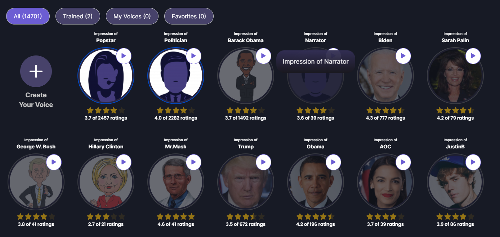
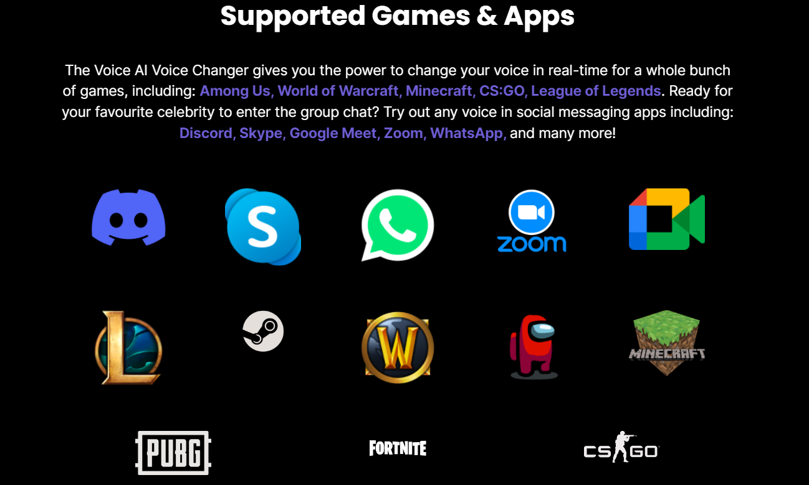

Voice.ai est une entreprise spécialisée dans la technologie de voix synthétique, fondée en 2007 par une équipe de pionniers dans ce domaine. Ils ont créé la première plateforme de text-to-speech (TTS) en cloud, développé des applications novatrices dans l'AI, comme iSpeech Home, qui est le précurseur d'Amazon Alexa et Google Home, ainsi que la première application grand public à intégrer la technologie de clonage vocal en 2012. Après plusieurs années à développer des applications dans d'autres domaines de l'AI, ils ont récemment choisi de se concentrer sur la technologie de voix pour révolutionner le domaine de la communication en ligne. Voice.AI est un logiciel de changement de voix en temps réel utilisant l'IA pour créer des voix personnalisées et réalistes. Contrairement aux changeurs de voix traditionnels ou aux modulateurs de voix, Voice.AI permet une liberté totale de créer sa propre voix. Que ce soit pour une voix amusante pour plaisanter avec des amis ou pour créer une nouvelle voix pour mieux représenter son identité en ligne, Voice.AI rend possible la création de sa propre voix. Il est facile à installer et permet de prendre sa création de contenu, sa diffusion en direct ou son jeu à un nouveau niveau.
Voice.AI est utile pour un large éventail d'utilisateurs, y compris les streamers, les joueurs et les individus qui veulent ajouter de l'originalité à leurs appels ou réunions en ligne. Les streamers peuvent utiliser Voice.AI pour apporter un dynamisme supplémentaire à leurs diffusions en direct. En choisissant parmi des milliers de voix générées par l'IA ou en créant sa propre création unique, il est possible de surprendre ses abonnés et de voir sa communauté croître. Les joueurs peuvent également utiliser Voice.AI pour avoir une expérience de jeu plus immersive. En choisissant une voix qui correspond à leur personnage de jeu préféré, ils peuvent impressionner leurs amis avec des voix réalistes en temps réel. Enfin, pour les appels ou les réunions en ligne, Voice.AI permet d'ajouter du piment en sonnant comme sa célébrité préférée ou son politicien préféré.
La principale caractéristique de Voice.AI est sa capacité à créer des voix personnalisées et réalistes en temps réel. Contrairement à de nombreux changeurs de voix ou générateurs de voix, qui peuvent sonner robotiques, Voice.AI utilise l'IA pour créer une conversion de la parole à la parole en temps réel afin de transférer la voix de l'utilisateur dans une voix complètement nouvelle tout en conservant ses émotions, ses emphases et ses modèles de discours. Voice.AI utilise également une technologie de pointe pour conserver l'émotion de la voix originale et l'appliquer aux nouvelles voix personnalisées. Le logiciel dispose d'une grande bibliothèque de voix différentes et d'une interface intuitive, permettant à quiconque d'accéder à une technologie de pointe sans équipement d'enregistrement coûteux. Voice.AI est également gratuit à télécharger, bien qu'il y ait des plans premium disponibles pour des fonctionnalités avancées et des effets audio de qualité supérieure. Enfin, Voice.AI est également engagé dans l'avancement de l'IA en permettant aux utilisateurs de contribuer à la puissance de traitement pour améliorer leur technologie.
Voice.AI est un outil puissant et innovant qui permet de changer sa voix en temps réel grâce à la technologie de l'IA. Il offre une grande variété de voix, d'effets et de filtres pour créer des voix personnalisées et réalistes, idéales pour les streamers, les gamers et les professionnels qui cherchent à ajouter une touche de créativité à leurs appels ou réunions en ligne.